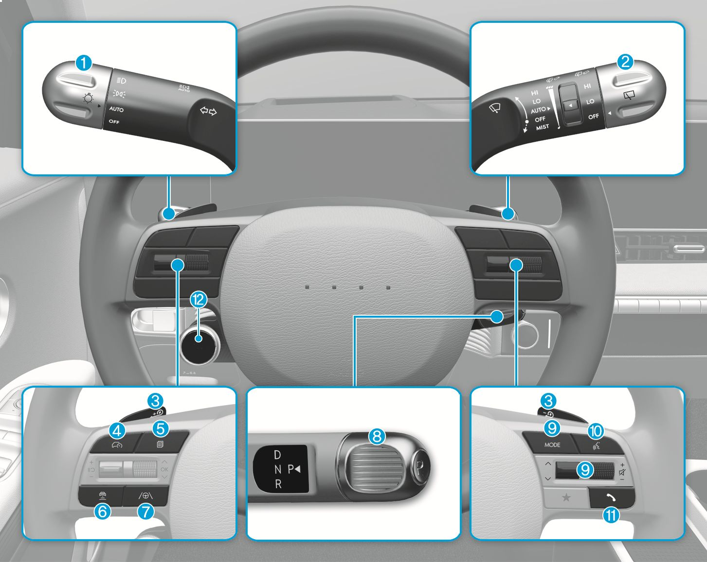

스티어링 휠 조작 버튼

1C_SteeringWheelControlOverview
- 조명 스위치 실외 조명 스위치
- 와이퍼/와셔 스위치 앞유리 와이퍼 작동하기
- 패들 시프트 스위치 패들 시프트 레버 조작하기
- 주행 보조 버튼 기능 켜기 및 끄기
- 클러스터 메뉴 설정 버튼 클러스터 설정 방식
- 차간거리 버튼 기능 켜기 및 끄기
- 차로 주행 보조 버튼 기능 켜기 및 끄기
- 전자식 변속 다이얼 변속 위치 선택하기
- 오디오 리모컨 스위치 오디오 리모컨(스티어링 휠)
- 음성 인식 버튼 음성 인식 시스템
- 블루투스 핸즈프리 버튼 블루투스 핸즈프리
- 드라이브 모드 버튼 드라이브 모드 선택